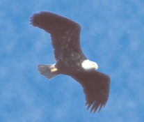
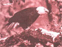

Sauk-Praire, Wisconsin: Where Eagles Soar
December/January 1991
How to get a close-up look at one of nature's most beautiful creatures
By Lee Davenport
AN ORANGE GLOW IN THE eastern sky announces that dawn is near. Shapes on the horizon take form as the ever-increasing brightness lights a hidden landscape. The sun's initial rays debut, prompting movement in distant treetops.
Today begins the Eagle Lover's Rendezvous, along the lower Wisconsin River. Hundreds of wool-clad onlookers puff little billows of steam and wait patiently in the January dawn for the first giant bird to take flight.
Across the river, a majestic figure floats over the tree-line. It soars gracefully and almost seems suspended in midair. Clicking cameras break the silence as a throng of birdwatchers holds its collective breath. A young boy excitedly whispers, "Is that one, Dad?" The answer is affirmative. Welcome to Sauk-Prairie, Wisconsin, and the first day of the annual migration of the bald eagle.
Of 8,600 known birds of the world, the bald eagle (Haliaeetus leucocephalus, order Falconiformes) has gained more than its share of attention. Exclusive to North America, it has been a premier predator of the heavens for thousands of years, and justifiably so. An adult of this species has only one noteworthy enemy-man. Until recent decades, careless disregard for this beautiful bird nearly caused its extinction.
Bald eagles literally dominated the skies of North America before the 1800s. Shortly into the 19th century, however, habitat destruction and the shooting of eagles for sport started their gradual decline. With the birds careening dangerously toward extinction, the government initiated passage of the Migratory Bird Treaty of 1916 and, a number of years later, the Bald Eagle Protection Act of 1940. Violators faced fines of up to $20,000 and one to five years imprisonment. Enforcement, though, was weak. By 1950, eagles no longer existed in many of their previous habitats.
With only 82 known pairs left nesting within its borders, the state of Wisconsin finally took action. In 1972 the bald eagle was placed on the Badger State's endangered species list. That same banner year, the federal government outlawed DDT and other organochlorine pesticides that had been contaminating the eagle's food chain. These actions marked the turning point for the eagle's restoration. Unfortunately, recovery has been slow.
Most residents of Wisconsin have supported their state's contribution to aiding the plight of bald eagles; however, two communities deserve a standing ovation. The urban and rural folks of Sauk City and Prairie du Sac have dedicated themselves to the longterm welfare of eagles and other migratory birds that winter in the trees of the lower Wisconsin River.
Physical Attributes of the Bald Eagle
When admiring the bald eagle, you many find it hard to fathom that President Thomas Jefferson could have proposed the turkey as our national symbol. A female eagle is 34 to 43 inches tall, a male 30 to 35 inches. The wings of a "baldie" span seven feet and easily carry the bird's weight of eight to 14 pounds. Its white head is described by its common name, "bald," and the scientific name, leucoccephalus. The adult's dark brown body contrasts strikingly with its white head and tail. Its feet, eyes, and large, extruded bills are yellow. Breeding season begins in mid-February; offspring typically leave the nest by August.
The immature bald eagle is more difficult to identify. It has a dark brown body and only sprinkles of white on the underwings and tail. Its head and tail don't turn fully white until the eagle reaches the age of four or five. Its feet are yellow, like an adult's, but its bill and eyes are brown. As such, immatures are often mistaken for golden eagles or hawks.
What to Bring and Where to Observe
Let there be no mistake, fellow bird-watchers: The late-winter eagle-watching season (January, February, March) in Wisconsin is cold, real cold. Expect daytime temperatures that are 20 degrees on either side of zero (I remember one February morning at 10 degrees above ...in the sunshine). Be sure to bring warm undergarments, a wool stocking hat, and most of all, warm boots and gloves. Those who have trouble adapting to cold weather can easily watch the eagles from inside a warm car-there are hundreds of accessible pull-offs within safe watching distance.
When photographing eagles in flight above the river, a 70-210mm zoom lens does a good job. But serious shutterbugs who wish to photograph birds perched in the trees across from Sauk-Prairie need more magnification. A 500 mm telephoto lens would be the minimum recommendation. In either case, be sure to bring a tripod or monopod for clear exposures.
The winter sky of Wisconsin can be pristine blue or cloud gray. So, for best photo results, carry 100-, 200-, or 400speed (ASA) film. The best all-around film for part-time photographers, though, is 200.
Binoculars are another eagle-watching must, and for those who might not have yet invested in a good pair, here are some tips: "Power" is the amount of magnification and is expressed in the first part of a numerical formula engraved on the body of the glasses: 7x 35, for example. 7x means that the binoculars magnify the image your eye sees by seven times. The second numeric designation in the formula describes the diameter in millimeters of the objective lens (big end). 7x 35 binoculars have an objective lens measuring 35 mm across.
Birders seldom use binoculars with a magnification of less than 7x or greater than lox-any less and birds are not enlarged sufficiently; any greater and the field of view tends to become restricted and outweighs the benefit of higher magnification. For ease of viewing Sauk-Prairie eagles, a pair of 7x 35 or IN 40 glasses suffices nicely.
Among the best spots to watch for eagles are the dam (just off Route 78 and one mile north of Prairie du Sac) and Veteran's Park (located below the dam just north of the Route 60 bridge). Veteran's has plenty of parking as well as a boat launch for anglers. The parking lot adjacent to the Fire House Restaurant is also a prime watch-point. Eagles frequently perch in the trees on the island in that section of the river. A trail in the August Derleth Park in Sauk City parallels the river. The river-edge walk can be exhilarating, and eagles pass there en route to the dam.
On the days in late February and March when slightly heavier fishing pressure occurs below the dam, the Fire House Restaurant parking lot and the August Derleth Park trail can be better watch-points than the dam or Veteran's Park. Although the eagles seem to know that anglers are friends, their nature causes them to keep a safe distance.
For ease of viewing Sauk-Prairie eagles, a pair of 7x 35 orlox 4 glasses suffices nicely.
The Future of the Sauk-Prairie Eagles
There are days when the skies of Sauk-Prairie are so alive with "baldies" that it's hard to believe they were ever threatened by extinction. Aerial acrobatics performed by the eagles and their close cousins, the peregrine falcons and ospreys, are a sight to behold for newcomers.
To the casual spectator, members of the Falconiformes order are simply things of grace-free spirits that ride the wind. But to a dedicated bird-watcher, these birds are the thread that belongs in the magnificent tapestry of life. It is these hard-core naturalists who have spoken out against injustice to the eagle and who continually prompt governmental bodies to act on behalf of the bird's well-being. A good example of this occurred on the lower Wisconsin.
The Ferry Bluff Eagle Council, a support group of the Wisconsin Wildlife Federation, took a bold and unusual approach in protecting the eagle's vital wintering grounds in the Sauk-Prairie area: After documenting the roosting and feeding territories of the eagles, it became obvious that many of the sites were on private property and not under the management policies of the Department of Natural Resources (DNR). Council president Dave Erickson contacted Robert Horwich, a biologist who successfully achieved a "community sanctuary" for the endangered black howler monkey of Belize, in Central America.
"In Belize," Horwich said, "we looked at the monkey's range and discovered that most of it was on private land." Through many long hours, Horwich obtained pledges from more than 1 farmers saying they would practice positive land use. The landowners later aligned with the Belize Audubon Society to establish a longterm management plan for the monkeys.
Erickson and Horwich agreed that a similar management plan was needed in order for Sauk-Prairie eagles to regenerate their former numbers. Horwich assisted Erickson and the eagle council in establishing the Sauk-Prairie Community Eagle Sanctuary.
The sanctuary's implementation on the lower Wisconsin riverway yielded community awareness like never before. The most important aspect of sanctuary management, Erickson said, would be that the woods in the vicinity of the roost be undisturbed, and that human activity be severely restricted there during winter months. Thus, property owners who were unaware of roosts on remote portions of
their tracts were recruited as faithful guardians. Also, through council recommendations to the DNR, hunting in specific roosting areas was discontinued between November 15 and March 13.
No longer considered endangered. the bald eagle has recently been moved into the "threatened species" category. It is projected that by the year 2, nearly 4 breeding pairs will fly the skies of Wisconsin. Only through the foresight of groups like the Ferry Bluff Eagle Council has the banishment of this magnificent bird been staved off.
Editor's note: Les Davenport is a freelance writer living in Eureka, Illinois.
These days Sauk-Prairie is so alive with "baldies" that it's hard to believe they were ever threatened by extinction. Through the efforts of concerned people, their numbers have soared.
WHAT YOU CAN DO TO HELP
JOIN THE COUNCIL: MEMBERSHIP DUES FOR the Ferry Bluff Eagle Council are $1 basic, $15 supporting, and $25 contributing (tax deductible). Though most people just make a donation, active participation is most welcome. With council supervision, members can help locate roosts and feeding areas, gather information on wintering eagles for a scientific data base, develop viewing areas for the growing number of eagle lovers, and encourage the reestablishment of a year-round breeding population at Sauk-Prairie. When you join, you will receive a FBEC newsletter and other mailings concerning bald eagles. For more information, write: Ferry Bluff Eagle Council, Treasurer, F.B.E.C., PO. Box 532, Sauk City, WI 53583.
Adopt a nest: By becoming a bald-eaglenest sponsor, you can help continue the important work of monitoring and managing our eagle population. Individuals, clubs, schools, and other groups can become bald eagle "foster parents" by contributing the $1-per-year adoption fee. All contributions are used specifically for bald eagle management and such educational activities as aerial surveys, the rescue and rehabilitation of sick or orphaned young. educational materials for schools, and meetings with private landowners to protect nest trees.
Over the course of the year, sponsors receive an adoption certificate, reports on management activities and surveys, a photograph of young eaglets in a nest, and a lovely bald eagle lithograph.
For more information, call 68/266712 or write to: Adopt An Eagle Nest Program, Bureau of Endangered Resources. P.O. Box 7921, Madison, WI 5377.
The wings of a "baldie" span seven feet and easily carry the bird's weight of eight to 14 pounds. It's feet, eyes, and large bill are yellow.
|
 EAGLE PHOTOGRAPHS ? GREGORY K. SCOTT-PHOTO RESEARCHERS, INC. The wings of a ""baldie"" span over feet and easily carry the birds weight of eight to 14 pounds. It's feet, eyes, and large bill are yellow. |
 These days Sauk-Praire is so alive with ""baldies"" that it's hard to believe they were ever threatened by extinction. Throgh the efforts of concerned people, their numbers have soared |
 |